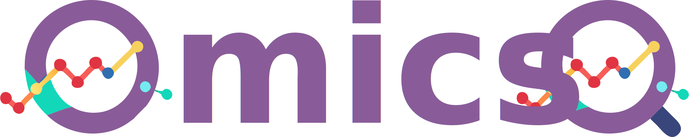
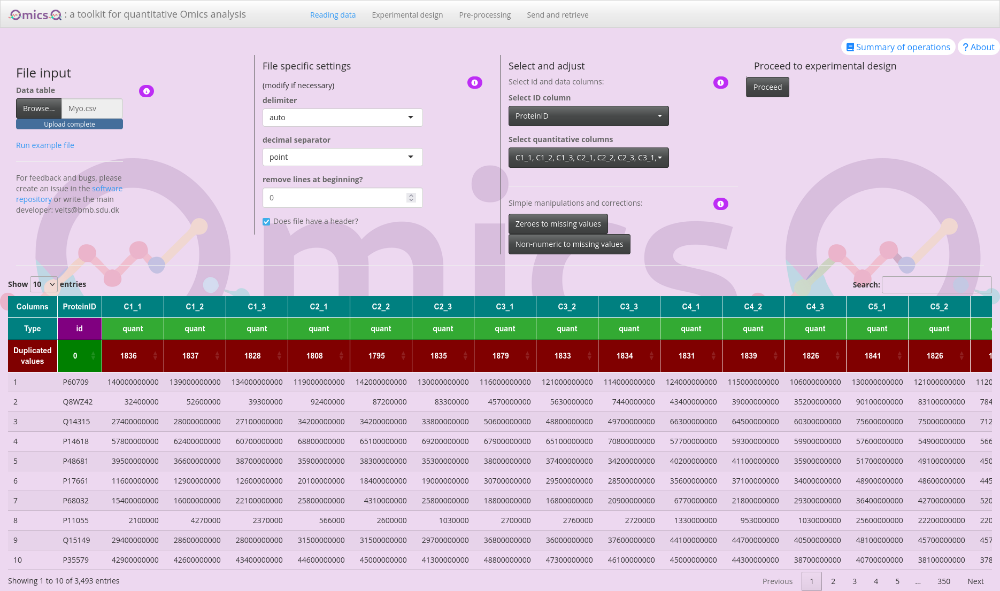
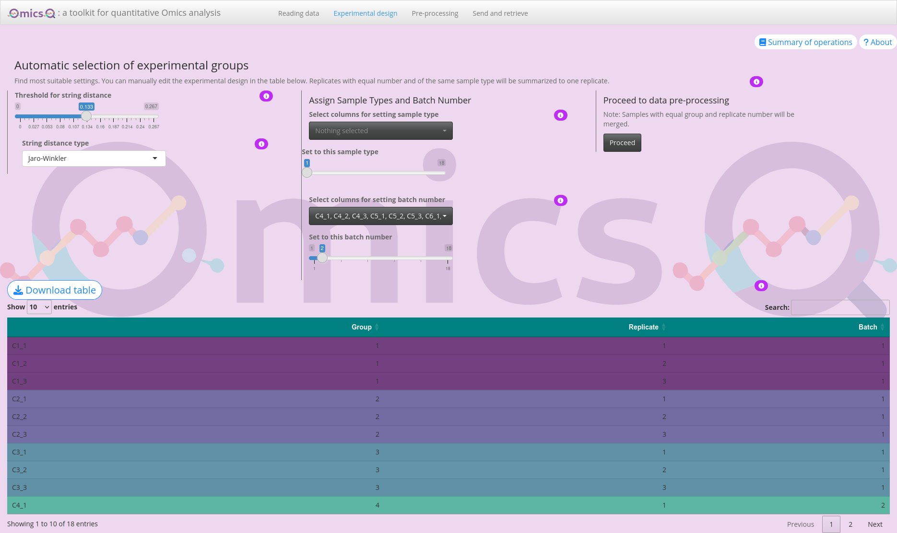
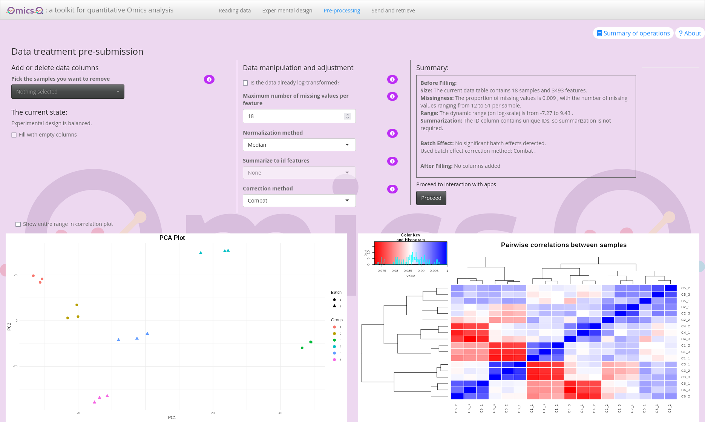
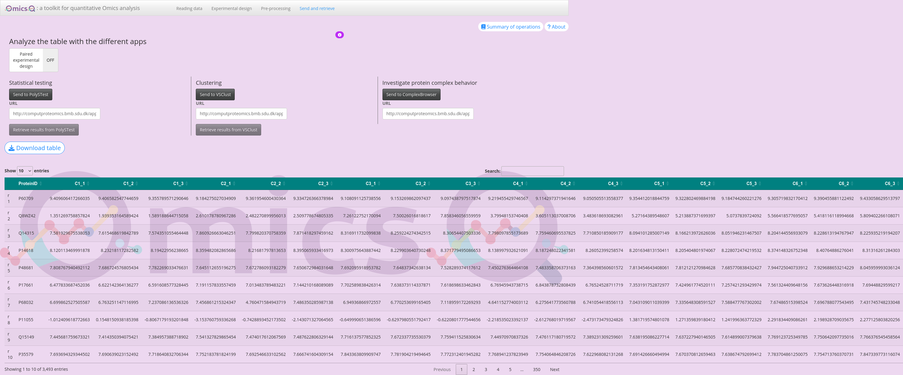
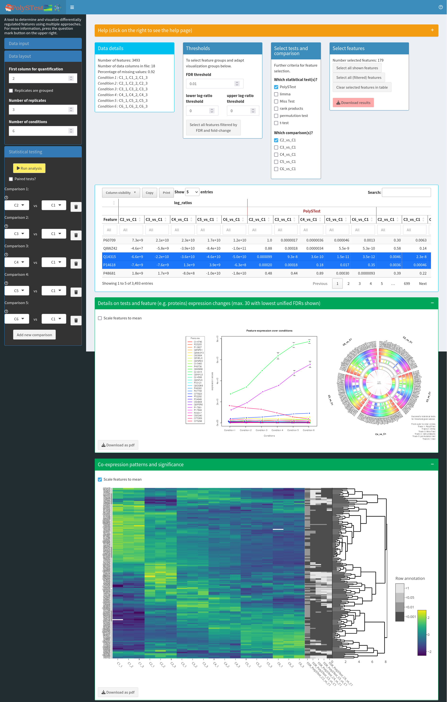
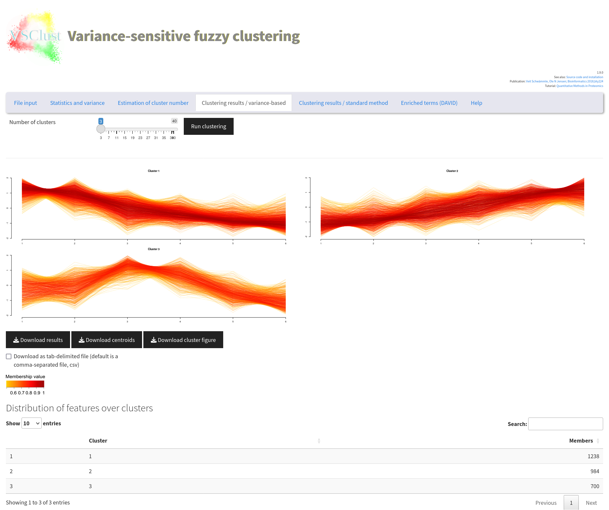
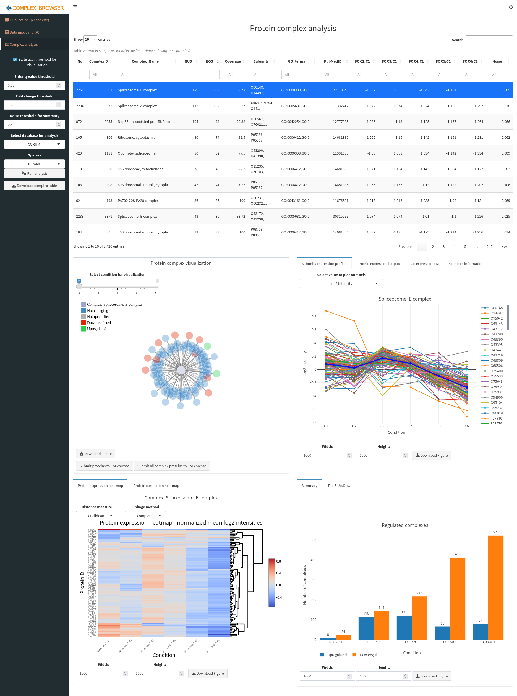

OmicsQ — Description and Tutorial

Introduction
OmicsQ is a modular Shiny application that streamlines the workflow of quantitative omics data analysis without the need to impute missing values. This tutorial will guide you through all the major steps — from importing your data, annotating your experimental design, and applying pre-processing methods, to sending your finalized dataset to dedicated external apps for statistical testing, clustering, or complex behavior analysis.
Online documentation: Further information about the different operations of the user interface are available through the information () buttons.
Recording carried operations: All data processing steps are available through Summary of operations. This ensures reproducibility of the results.
Here is a brief overview of what each section of the tutorial covers, each of them represented by a different tab in OmicsQ:
- Data Import
- Upload and verify your files (e.g., Excel or CSV/TSV).
- Adjust file-specific settings such as delimiters, decimal separators, etc.
- Upload and verify your files (e.g., Excel or CSV/TSV).
- Experimental Design
- Automatically or manually assign sample groups, replicates, and batch labels.
- Ensure your design is correct.
- Automatically or manually assign sample groups, replicates, and batch labels.
- Data Pre-Processing
- Apply transformations (e.g., logarithmic), normalization, and summarization.
- Remove features or samples with too many missing values
- Check and correct for batch effects.
- Apply transformations (e.g., logarithmic), normalization, and summarization.
- External App Integration
- Send processed data to specialized tools, such as PolySTest for statistical analysis, VSClust for clustering, or ComplexBrowser to explore protein complexes.
- Retrieve and incorporate results back into OmicsQ for having a single file with all information.
- Send processed data to specialized tools, such as PolySTest for statistical analysis, VSClust for clustering, or ComplexBrowser to explore protein complexes.
By the end of this tutorial, you will have a fully processed dataset aligned with your experimental design and enriched with external app results—all managed within a single Shiny application. Whether you are working with proteomics, transcriptomics, or other omics data, OmicsQ’s flexible modules offer a step-by-step approach.
Literature
TODO
Training Materials
TODO
Step 1: Data Import
In this part of the application, you will upload your data files containing the quantifications of biomolecules across different samples and make any quick, simple adjustments to ensure they’re ready for further analysis. Below are the features you see on your screen and how to use them:
1. File Input
- Upload your file
- Click Browse to select a file from your computer. Alternatively, you can use the example file.
- Supported file types typically include Excel (.xls or .xlsx) and text-based formats such as CSV or TSV.
- Click Browse to select a file from your computer. Alternatively, you can use the example file.
- Run example file
- Click Run example file to load a ready-to-use test dataset.
- This is useful if you want to explore the interface or confirm it’s working properly before using your own data.
- Click Run example file to load a ready-to-use test dataset.
- Feedback and issue reporting
- Links are available here to the OmicsQ software repository for raising issues, or to contact the main developer for additional support. There is more information via the ?About button on the upper right.
Tutorial
Download the example file containing protein abundances of an cell differentiation experiment from the GitHub repository here. You can use the download raw file button for direct download. The upload the file into OmicsQ.
2. File-Specific Settings
Once you upload a file, OmicsQ will automatically detect if it’s an Excel or a CSV/TSV file and determine the layout. Depending on the file type, different settings appear:
- For Excel: You may select the sheet if your Excel file has multiple worksheets.
- For CSV/TSV or other text files: You will see options to specify:
- Delimiter (e.g., commas, semicolons, tabs)
- Decimal separator (e.g., period
.or comma,)
- Skip lines at the beginning to ignore extra header lines
- Indicate if the file has a header row
- Delimiter (e.g., commas, semicolons, tabs)
If the automatic detection looks correct, you can keep the default settings. If not, simply adjust these fields to properly format your data.
Tutorial
The file should have read correctly. However, there are many duplicated values which could be of concern.
We usually do not expect getting duplicated values when the instruments provide sufficient precision in its measurements. However, in this case the values have been rounded quite stringently previously leading to the duplications.
Missing values are not considered when counting duplications.
3. Select and Adjust Your Columns
After your file is read, you can choose which columns are your ID columns (e.g., gene identifiers, protein IDs) and which columns hold the quantitative values (e.g., abundance measurements).
- Select ID column: Use the dropdown to pick exactly one column that represents the unique or primary identifier of each row.
- Select quantitative columns: Use the dropdown to select one or more columns that contain numeric data you’ll want to analyze.
- Simple manipulations:
- Zeroes to missing values: Convert all zeros in selected columns to “missing” values.
- Non-numeric to missing values: Convert any unexpected strings (like “#DIV/0!”) into missing values.
- Zeroes to missing values: Convert all zeros in selected columns to “missing” values.
Tutorial
Now you need to select which columns will be used for identifying the molecules (here proteins given by protein accession numbers) and which columns provide the quantifications.
The id column has already chosen correctly as indicated by a “Type” id above the column.
Now press the button below Select quantitative columns. You can use the select all options and then click on ProteinId to get all columns but the one for the identifications. Then click anywhere in the app. Now all quantitative columns should be been marked as quant.
4. Proceed to Experimental Design
Once you have at least one quantitative column selected, you can click the Proceed button to continue. If you have not selected any numeric columns, you will see a message prompting you to do so before you can move on.
- Proceed button: This becomes enabled only after valid columns are selected.
Tutorial
Click Proceed to take you to the next step, where you define group labels, replicates, and other experimental information.
5. Data Preview
At the bottom of the page, you’ll find a table showing the top portion of your uploaded file. This helps you confirm that the data has been loaded and recognized in the correct format. Columns that have been assigned a certain role (ID vs. quant) will be highlighted accordingly.

Tip: If anything seems off, return to the relevant panel to adjust the file settings or reassign columns. Once everything looks good, use the “Proceed” button to advance to the next step.
Step 2: Experimental Design
After importing your data, you move to the Experimental Design tab. Here, you can automatically group and label samples, define replicate numbers, and assign batch information before proceeding to downstream analysis.
1. Automatic Selection of Experimental Groups
- Threshold & string distance:
- The slider lets you set a threshold that controls how similar or different column names must be to be grouped automatically.
- The “String distance type” dropdown offers different methods for comparing column names (e.g., Levenshtein, Jaro-Winkler).
- The slider lets you set a threshold that controls how similar or different column names must be to be grouped automatically.
- Automatic grouping: As you adjust the threshold or change the distance type, the app attempts to cluster your sample names and assign them to different groups automatically.
(Placeholder for Screenshot 1: “Main panel for experimental design”)
Tutorial
Play with the rules of the string distance to see how the sample grouping changes. Remember to place it into a similar position as before at the end.
2. Assign Sample Types & Replicate Numbers
- Select columns for sample type:
- Adjust the slider to assign them a specific sample-type number (e.g., 1, 2, 3, …).
- Use the dropdown to select which samples should be considered the same “type” or condition. -
- Adjust the slider to assign them a specific sample-type number (e.g., 1, 2, 3, …).
- Replicate assignment:
- Once samples share the same type, their replicate numbers are automatically updated in the table.
- If needed, you can refine replicate numbers directly in the table at the bottom of the page.
- Once samples share the same type, their replicate numbers are automatically updated in the table.

3. Annotating Batches
This helps keep track of potential batch effects in subsequent analyses.
- Specify batch number: Use the slider to assign a batch ID (e.g., 1, 2, 3, …).
- Select columns for batch assignment: Pick any samples for the specific batch ID that were measured or processed in the same batch.
Tutorial
Although there are no batches in this experiment, assign a batch number of two to the second half of the samples (C4_1 to C6_3).
4. Proceed to Data Pre-Processing
Where to find it: The right-most panel titled “Proceed to data pre-processing.”
Proceed button: Once you’ve finished assigning groups, replicates, and batch numbers, click Proceed and you will be taken to the next step in OmicsQ, where you can review and process your data further.
Download table: You can also download the updated experimental design table as a CSV for your records or offline editing.
Tutorial
Press the button to proceed to the next tab.
5. Experimental Design Table
At the bottom of the page, you’ll see a table summarizing your current group assignments, replicate numbers, and batch info:
- Editing cells: Double-click a cell to change its value (e.g., alter group labels or replicate numbers).
- Color-coding: Some columns are color-coded based on assigned groups.
Tips & Reminders
- Adjust the string distance threshold and the string distance type carefully to get meaningful groups.
- You can always manually override group or replicate information in the table below.
- Remember to assign batch numbers if your samples were run in separate experimental batches, even when you initially do not intend to correct for batch effects.
Step 3: Data Pre-Processing
In Step 3, you can apply various transformations and filters to your data, remove or add sample columns to achieve balanced designs, and explore immediate visual feedback through PCA and correlation plots. This allows you to try different settings and see their effects in real time.
1. Add or Delete Data Columns
Where to find it: The left panel under “Add or delete data columns.”
- Pick the samples to remove: Use the dropdown to select sample columns you no longer want in the analysis.
- Fill with empty columns: If your experiment is unbalanced (e.g., one group has fewer replicates than another), you can add columns with only missing values to make all groups have the same number of replicates. This helps maintain a more balanced design, but will introduce blank values.
- Current state: A quick summary is shown, indicating whether your design is balanced or unbalanced.
2. Data Manipulation & Adjustment
Where to find it: Middle panel labeled “Data manipulation and adjustment.”
- Log-transformation: Check if data is already log-transformed. If not, OmicsQ will log2-transform the data. OmicsQ initially estimates whether the data was transformed. Always check to confirm whether the estimation was correct.
- Max NA per feature: Allows you to set a maximum threshold for missing values across samples. Any feature (row) exceeding that threshold is removed. This removes features with only spurious measurements.
- Normalization:
- Choose from none, median, mean, or cyclic LOESS normalization.
- Compare how each method affects your data by checking the plots at the bottom of the page.
- Choose from none, median, mean, or cyclic LOESS normalization.
- Summarize to ID features: If your ID column (e.g., gene/protein IDs) has duplicates, you can aggregate them by sum, mean, median, etc. This reduces multiple rows with the same ID to a single representative row.
- Batch Correction: If you assigned batches in the previous step, you can select a correction method, such as limma or Combat, to adjust for batch effect. When there is only one batch or fewer than two replicates per batch, this option is disabled.
3. Summary & Proceed
- Summary box: Displays key information, including the final number of features and samples, the missing data rate, and whether any features show significant batch effects.
- Proceed to interaction with apps: Once you are satisfied with the data adjustments, click Proceed to move on to the next part of OmicsQ, which may include more specialized data exploration or analysis apps.
4. Visual Feedback
Beneath the summary panels, you’ll find two plots—a PCA plot and a correlation matrix—that let you see the effect of your chosen data transformations:
PCA Plot: Shows the separation of samples by the first two principal components.
Correlation Plot: Displays a heatmap of pairwise sample correlations, highlighting how similar or different they are after processing. This helps identifying potential outliers or technical artifacts that might need addressing.

Tutorial
Try different normalization methods and observe the changes in the two plots.
Check whether OmicsQ suggests batch effects. Also try different batch correction methods.
Despite several features apparently be affected by batch effects, their number is rather low and we thus will omit batch correction. Actually, these changes are mostly due to sample differences (late differentiation state versus early), and thus show that it can be misleading when using batches that contain sample types that are different for the different batches.
The correlations between the samples are very high. Therefore, click on the button Show entire range in correlation plot to get a more distinguishable picture.
Click Proceed to continue
to the next module of OmicsQ.
Tips
- Experiment with different normalization or batch correction methods, then observe changes in the PCA and correlation plots.
- Use max NA filtering to remove features with extensive missing values, which can simplify downstream analyses.
- If your design is unbalanced, explore removing columns from the largest groups or adding NA columns to the smallest groups to maintain parity.
Step 4: Interacting with Additional Apps
After you have completed data pre-processing, OmicsQ allows you to send your processed dataset to additional apps for deeper analysis. These tools can be used for statistical testing, clustering, and exploring protein complexes. Below is an overview of each app and how to access them within OmicsQ.
1. Sending Data to External Apps
Here, you can send the data to specific web applications. Parameter such as experimental design are automatically configured.
- PolySTest:
- Designed for statistical testing of multi-omics or proteomics data with missing values
- Once clicked, your processed data is uploaded, and a new window or tab opens where you can run various statistical tests.
- Use “Retrieve results” to import any outcomes back into OmicsQ.
- VSClust:
- A clustering tool that groups features (e.g., proteins, peptides, or genes) based on abundance profiles and their variances, and does not require value imputation.
- Similar to PolySTest, you click “Send” to push data to VSClust and “Retrieve results” to pull them back.
- Helps you identify co-expression or co-regulation patterns in your data.
- ComplexBrowser:
- Focuses on exploring protein complexes and how their subunits behave under different experimental conditions.
- Clicking “Send to ComplexBrowser” uploads the data, and you can investigate complex membership, stoichiometry changes, or differential expression of subunits.
- “Retrieve” is optional if the app provides data back to OmicsQ.
- Focuses on exploring protein complexes and how their subunits behave under different experimental conditions.
2. Paired vs. Unpaired Design
Paired toggle: If your design is paired (e.g., matched samples before/after treatment), switch this on to ensure apps handle the data appropriately.
URL fields: By default, the apps point to public servers (e.g.,
computproteomics.bmb.sdu.dk). You can change these URLs to local or private servers if necessary. All apps can be run as isolated docker containers.
3. Working with Results
- Connection status: When an app finishes processing, click “Retrieve results” to pull them back into OmicsQ.
- Result columns: Results from each app are usually added to the current table with columns labeled “PolySTest_…,” or “VSClust_…,”. You can download the updated table at any point by clicking “Download table.”

4. About the External Apps
- PolySTest
- A statistical toolkit for integrated, multi-condition testing in proteomics/omics experiments.
- Contains Miss Test for inclusion of missing data in the testing without any assumptions about the missingness.
- Useful for identifying differentially expressed features across multiple groups or timepoints.
- A statistical toolkit for integrated, multi-condition testing in proteomics/omics experiments.
Tutorial: Link to R package vignette (the tutorial contains the same steps as carried out in the web application).
Source Code
Publication: [PubMed link]https://pubmed.ncbi.nlm.nih.gov/32424025/)
R Package:

- VSClust
- Clusters features with similar expression/abundance profiles considering their individual variances.
- Can be applied on data with missing values
- Helps reveal co-regulated sets of molecules (e.g., proteins, genes) and highlight potential biological modules.
Tutorial: PubMed link
Publication: PubMed link
Source Code
R Package:

- ComplexBrowser
- Allows inspection of known protein complexes, exploring how their subunits behave across conditions or treatments.
- Facilitates a better understanding of complex stoichiometry or stability changes under different experimental scenarios.
- Allows inspection of known protein complexes, exploring how their subunits behave across conditions or treatments.
Tutorial: Online tutorial
Publication: PubMed link
Source Code

If you encounter connectivity issues, ensure your browser and network settings allow opening new windows/tabs and sending data to these external URLs. Then try again.
Tips
- Privacy & Security: If you work with sensitive data, consider hosting these apps on a secure internal server and update the URL fields in OmicsQ accordingly.
- Data Size: Uploading very large datasets might require additional time or could fail if your internet connection is unstable or if the server imposes size limits.
Next Step: After analyzing or clustering your data in these apps, revisit your results in OmicsQ to combine insights or proceed with downstream workflows.